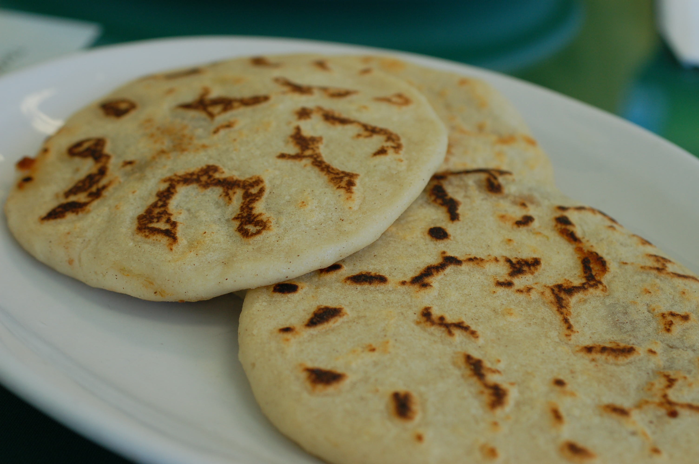

Pupusas

Pupusas are traditional Salvadoran stuffed flatbreads, typically filled
with beans, cheese, or pork. They are served with curtido,
a pickled cabbage slaw, and salsa.
Ingredients
- 2 cups flour mass
- 1 ½ cups warm water
- 1 cup refried beans (or other filling: cheese, pork)
- 1 cup grated cheese
- Salt to taste
How to cook it
- Mix the flour mass and warm water to form a soft dough. Add salt.
- Divide dough into balls, flatten each ball, and place filling in the center.
- Fold and seal, then flatten again into discs.
- Cook on a hot griddle until both sides are golden and slightly crispy.
Credits to where credits are due, I used chatGPT for the ingredients and the steps
Go back home